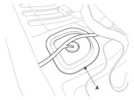
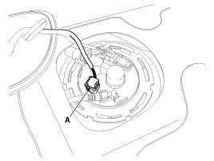

Fuel Pressure Release: Service and Repair
Release Residual Pressure in Fuel Line
CAUTION:
There may be some residual pressure even after "Release Residual Pressure in Fuel Line" work, so cover the hose connection with a shop towel to prevent residual fuel from spilling out before disconnecting any fuel connection.
1. Turn the ignition switch OFF and disconnect the battery (-) cable.
2. Remove the rear seat cushion.
3. Remove the service cover (A).

4. Disconnect the fuel pump connector (A).

5. Connect the battery (-) cable.
6. Start the engine and let idle, and then turn the ignition switch OFF after the engine has stopped on its own.